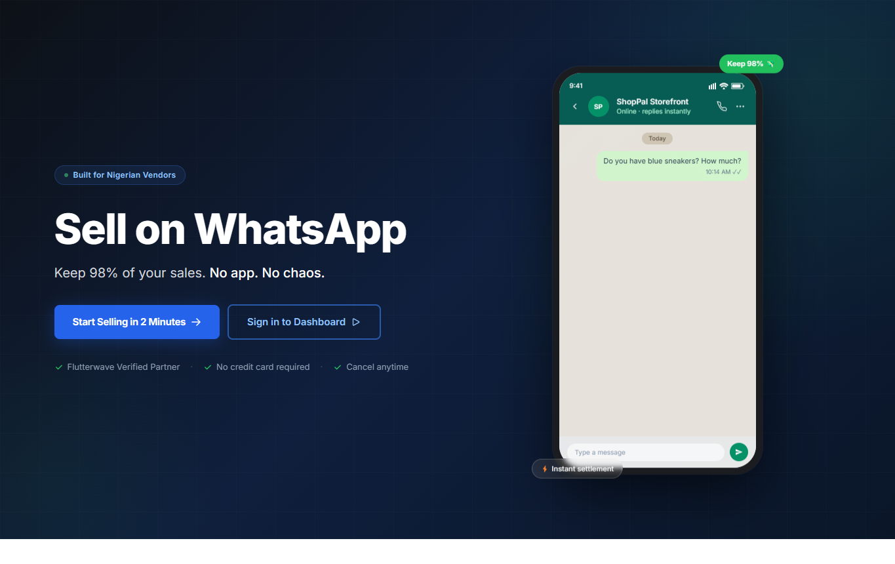

← All workPROJECT 10 / 11
SELECTED WORK / OMJ LABS
ShopPal.
Commerce in the conversation.
A conversational commerce platform for Nigerian merchants, with a vendor portal and WhatsApp product discovery.
01 / THE PROJECT
What it does.
A conversational commerce platform for Nigerian merchants. A vendor portal supports catalog and order management while WhatsApp chat helps shoppers discover products.
BUILT WITH
Next.jsFastAPIWhatsApp
02 / INTERFACE PREVIEW
Inside the flow.
A captured screen from the live product, followed by concept screens illustrating the main parts of the experience.

OMJ LABS / 10Manage a catalog
OMJ LABS / 10Discover in chat
OMJ LABS / 10Follow orders